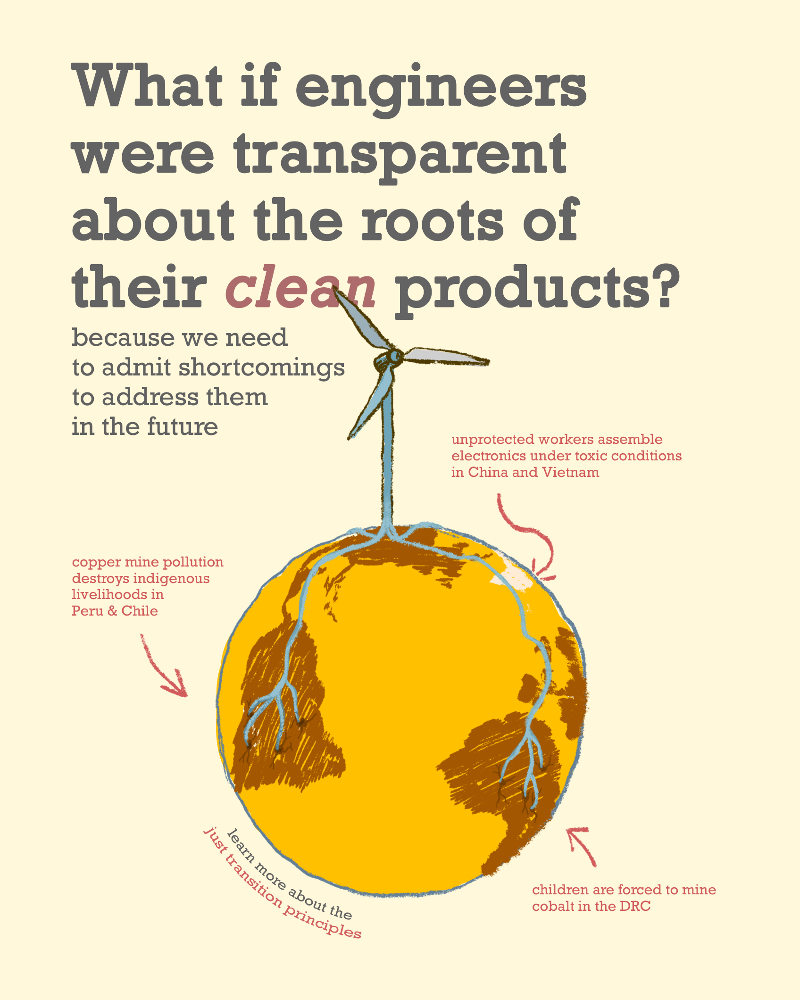

Visualizing the roots of renewables
I drew this illustration because I can’t stop thinking about this topic. I am on a journey to redefine what it means to be a good engineer. As part of this, I want to understand how we can visualize the systemic impact of innovative technologies.
🦋 The question that guides me:
Engineers design for structural integrity. But why does this not include social integrity? How can something be considered structurally safe if the structures it requires harm humans and other beings?
Resources related to the illustration
Copper Mine Pollution in Chile & Peru
- “Chile’s Copper Mining Is Draining Water and Killing the Sea” (The Guardian)
- “Chile Charges Anglo American for Polluting Waters at Los Bronces Mine” (Reuters)
- “Peru Copper Mine Left Children with Arsenic in Their Blood” (The Guardian)
Child Labor in Cobalt Mining in the DRC
- “Apple & Tesla Sued Over Deaths in Cobalt Mines” (The Guardian)
- “How ‘modern-day slavery’ in the Congo powers the rechargeable battery economy” (NPR / Fresh Air)
- “US Court Dismisses Child Labor Case Against Tech Giants” (Reuters)
- “Elon Musk’s laughable solution to Tesla’s child labor worries.” (Forbes)
Unprotected electronics workes
- ”Foxconned Labour as the Dark Side of the Information Age: Working Conditions at Apple’s Contract Manufacturers in China” (Paper by Sandoval)
- ”Foxconn Suicides” (Wikipedia)
Look at these ticking numbers.
These numbers show me that pollution and exploitation aren’t accidental—they’re built into the system by design. I take the position that engineers need to wake up to this reality, because only by acknowledging these intentional shortcomings—like Tesla’s quiet reliance on cobalt from the DRC despite known child labor—can we begin to confront and change them.
What are the Just Transition Principles?
The 🔮 Just Transition Principles are guidelines that help us to stay focused on addressing the root causes of environmental injustice as opposed to building technological quick fixes that perpetrate ecological destruction and human suffering.
The principles are:
- Living well without harming others
- Meaningful Work
- Self-Determination
- Equitable Redistribution of Resources and Power
- Regenerative Ecological Economics
- Culture and Tradition
- Solidarity
- Let’s Build What We Need Right Right Now
 The Just Transition Framework: moving from an extractive economy to a regenerative economy
The Just Transition Framework: moving from an extractive economy to a regenerative economy
Why roots?
The word radical inherits its meaning from latin, meaning rooted. I drew roots because environmental injustice didn’t start with CO2 in the atmosphere. Much more likely, it started with a state of mind that justified the destruction of ecosystems, displacement of people, and child labor for the sake of technological & scientific development. This way of 🔮 doing things around here has finally led to the warming of the whole planet.
To me, radicalness means to find a solution to a problem by going back to the roots of the injustice (see more on 🔮 radicalness). In an engineering context, much of the injustice occurs via the supply chains, somewhere far away from the deployment of clean energy products.
Plants have roots. The roots of plants are some of the most intelligent parts of their systems as they investigate and make decisions separately yet connected to the larger organism. Therefore, I argue that being a radical engineer also means to be a critical thinker. Obviously and sadly, critical theory is a term barely stated as a core piece of a good engineer.
The mining needed to sustain green technology
Wind energy and solar require 7-18 times more minerals per energy produced compared with fossil-fuel based equivalents (per unit of energy produced). To put the energy transition effort into context, the below quotes might help.
We will need 2x more copper than we have mined throughout all human history to feed the Western green transition plans.
~ 🔮 IRENA report
To convert our current energy systems as planned by Western governments, we would face the largest increase of production of metals in human history.
~ 🔮 Mark Mills
We need to analyze with nuance!
Obviously, fossil fuels also need to be extracted from this planet (and such mining doesn’t fall under the category of “mineral” mining as mentioned above). If we compare total mining operations, some voices state that:
A fossil fuel economy requires 535x more mining than a clean energy economy.
~ Michael Thomas, Article in Distilled
The problem will always stay the same. Mining is an inherently extractive process which has to harm our mother earth and the beings that depend on the land where mining takes place. Since there is so much inherent harm to land and people involved, we have to move very consciously and center the needs of the most affected groups and ecosystems.
Some mining projects try to involve communities at varying rates of success. It is extremely hard to find success stories in this complicated field. If you want to learn more about the efforts to pursue socially just mining, please refer to the research papers and books by Baillie et. al below.
Here is a personal interview with people affected by multinational mining corporations
Written works if you want to dig deeper
Archive
- An Archive for mining projects and their effects on communities: Mining and Communities
Magazine
- Science or the People: Bleeding Earth, Volume 25, no. 2 :The history of copper mining in Chile
Research Papers
- Armstrong, R., Baillie, C., & Cumming-Potvin, W. (2014). Mining and communities: understanding the context of engineering practice. Synthesis Lectures on Engineers, Technology and Society, 8(1), 1–148. https://doi.org/10.2200/S00564ED1V01Y201401ETS021
- Baillie, C., et al. (2020). Intro & community engagement in peru. In Socially Just Mining: Rethoric or Reality? Lessons from Peru (Synthesis Lectures on Engineers, Technology, & Society) (1st ed., p. 236). Springer.
- Eichhorn, S. J. (2022). Resource extraction as a tool of racism in West Papua. The International Journal of Human Rights, 1–23. https://doi.org/10.1080/13642987.2022.2036722
- Confalonieri, U. E. C., Margonari, C., & Quintão, A. F. (2014). Environmental change and the dynamics of parasitic diseases in the Amazon. Acta Tropica, 129, 33–41. https://doi.org/10.1016/j.actatropica.2013.09.013
Article
- The spiralling environmental cost of our lithium battery addiction - WIRED UK. (n.d.). Retrieved October 4, 2023, from https://www.wired.co.uk/article/lithium-batteries-environment-impact
Movies
~ •• • •• ~
Does something bubble up for you?
Pin your ideas or thoughts here 📌
Anyone can interact here. This is my little communication experiment.
I'd love to hear from you!
License for all original work:

 ROOTS-OF-RENEWABLES
ROOTS-OF-RENEWABLES